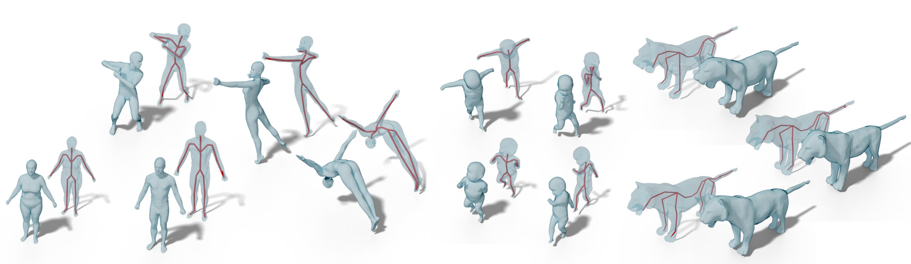
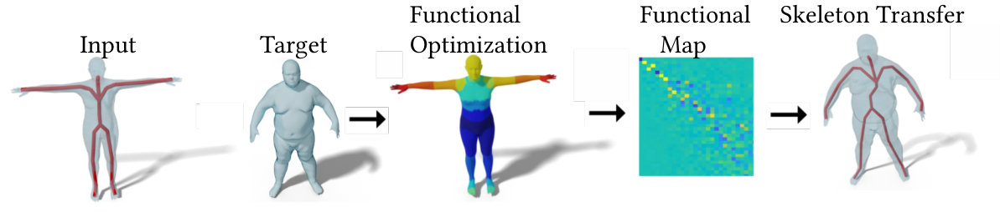
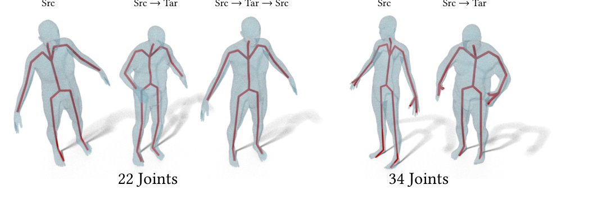
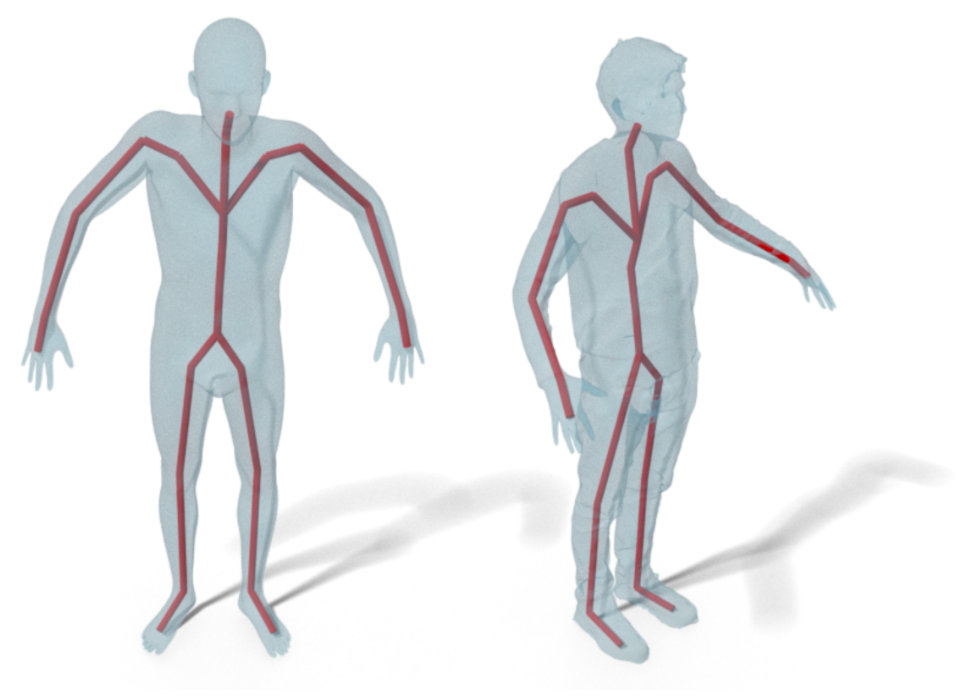

Abstract
The animation community has spent significant effort trying to ease rigging procedures. This is necessitated because the increasing availability of 3D data makes manual rigging infeasible. However, object animations involve understanding elaborate geometry and dynamics, and such knowledge is hard to infuse even with modern data-driven techniques. Automatic rigging methods do not provide adequate control and cannot generalize in the presence of unseen artifacts. As an alternative, one can design a system for one shape and then transfer it to other objects. In previous work, this has been implemented by solving the dense point-to-point correspondence problem. Such an approach requires a significant amount of supervision, often placing hundreds of landmarks by hand. This paper proposes a functional approach for skeleton transfer that uses limited information and does not require a complete match between the geometries. To do so, we suggest a novel representation for the skeleton properties, namely the functional regressor, which is compact and invariant to different discretizations and poses. We consider our functional regressor a new operator to adopt in intrinsic geometry pipelines for encoding the pose information, paving the way for several new applications. We numerically stress our method on a large set of different shapes and object classes, providing qualitative and numerical evaluations of precision and computational efficiency. Finally, we show a preliminar transfer of the complete rigging scheme, introducing a promising direction for future explorations.
Method
The input is a rigged source model and a target mesh. We encode the joints of the source skeleton as a functional regressor: a small matrix in the spectral (Laplace–Beltrami) basis that is independent of the mesh resolution and of the pose. A functional map between source and target, computed with few landmarks, carries the regressor to the target, where it gives back the position of every joint.

Results
The same regressor works with different skeletons, with clothed and noisy surfaces and across object classes, from humans to animals.


Why functional
Previous approaches need a dense point-to-point correspondence, often with hundreds of hand-placed landmarks. The functional regressor needs only a functional map, so it is fast, robust to different discretizations and poses, and it can be plugged into any intrinsic geometry pipeline.
The paper also shows a first transfer of the complete rigging, skinning weights included, between different shapes.
Publications
- A Functional Skeleton TransferP. Musoni, R. Marin, S. Melzi, U. CastellaniProceedings of the ACM on Computer Graphics and Interactive Techniques, vol. 4, no. 3 (SCA 2021)
BibTeX
If you use this work, please cite:
@article{musoni2021functional,
title = {A functional skeleton transfer},
author = {Musoni, Pietro and Marin, Riccardo and Melzi, Simone and Castellani, Umberto},
journal = {Proceedings of the ACM on Computer Graphics and Interactive Techniques},
volume = {4},
number = {3},
pages = {1--15},
year = {2021},
publisher = {ACM New York, NY, USA},
doi = {10.1145/3480140}
}Resources
Code & data
- GitHub repository (Python)
- Sample data: SMPL and Dynamic FAUST
Acknowledgements
RM and SM are supported by the ERC Starting Grant No. 802554 (SPECGEO). This work is partially supported by the MIUR project “Dipartimenti di Eccellenza 2018-2022” of the Department of Computer Science of Sapienza University and of the Department of Computer Science of the University of Verona.